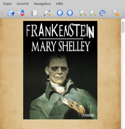
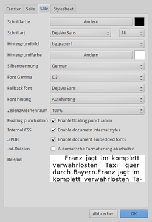

CoolReader
Dieser Artikel wurde für die folgenden Ubuntu-Versionen getestet:
Ubuntu 14.04 Trusty Tahr
Zum Verständnis dieses Artikels sind folgende Seiten hilfreich:
Coolreader  ist ein Programm, um E-Books in verschiedenen Formaten anzuzeigen. Dies klappt allerdings nur, wenn diese nicht über diverse Techniken zur "Digitalen Rechteverwaltung" (DRM) geschützt sind. Bei der Benutzeroberfläche kommt die Grafikbibliothek Qt zum Einsatz. Die Programmsprache ist Englisch, kann aber mit einer entsprechenden Sprachdatei auf Deutsch umgestellt werden.
ist ein Programm, um E-Books in verschiedenen Formaten anzuzeigen. Dies klappt allerdings nur, wenn diese nicht über diverse Techniken zur "Digitalen Rechteverwaltung" (DRM) geschützt sind. Bei der Benutzeroberfläche kommt die Grafikbibliothek Qt zum Einsatz. Die Programmsprache ist Englisch, kann aber mit einer entsprechenden Sprachdatei auf Deutsch umgestellt werden.
Unterstützte Formate:
EPUB (nur DRM-freie Dateien, kein EPUB3)
FictionBook (FB2)
Palm Database (PDB)
Reintext (TXT)
DOC (MS Word)
CHM (Windows Hilfedateien)
TCR
Eine der Stärken des Programms liegt in der vielseitigen Anpassung der Anzeige von E-Books. So kann man z.B. statt eines schnöden einfarbigen weißen Hintergrunds vergilbtes Pergamentpapier nutzen. Neben Linux sind auch Programmversionen für Windows und Android verfügbar. Eine Alternative ist der ähnlich vielseitige FBReader.
Installation¶
 Das Programm ist nicht in den offiziellen Paketquellen enthalten. Zur Installation muss man daher auf ein "Personal Package Archiv" (PPA) [1] ausweichen.
Das Programm ist nicht in den offiziellen Paketquellen enthalten. Zur Installation muss man daher auf ein "Personal Package Archiv" (PPA) [1] ausweichen.
Adresszeile zum Hinzufügen des PPAs:
ppa:vovansrnd/coolreader
Hinweis!
Zusätzliche Fremdquellen können das System gefährden.
Ein PPA unterstützt nicht zwangsläufig alle Ubuntu-Versionen. Weitere Informationen sind der  PPA-Beschreibung des Eigentümers/Teams vovansrnd zu entnehmen.
PPA-Beschreibung des Eigentümers/Teams vovansrnd zu entnehmen.
Damit Pakete aus dem PPA genutzt werden können, müssen die Paketquellen neu eingelesen werden.
Nach dem Aktualisieren der Paketquellen kann folgendes Paket installiert [2] werden:
cr3 (ppa)
 mit apturl
mit apturl
Paketliste zum Kopieren:
sudo apt-get install cr3
sudo aptitude install cr3
Verwendung¶
Bei Ubuntu-Varianten mit einem Anwendungsmenü startet man das Programm über den Menü-Eintrag "Büro -> CoolReader3" [3], unter Unity nutzt man den Befehl cr3. Alternativ kann man das Kontextmenü  des jeweiligen Dateimanagers nutzen, um die eingangs erwähnten unterstützten Dateiformate direkt zu öffnen.
des jeweiligen Dateimanagers nutzen, um die eingangs erwähnten unterstützten Dateiformate direkt zu öffnen.
 
| Funktionen der Symbolleiste | |
| Symbol | Zweck |
| Datei öffnen | |
| Zuletzt gelesene Dateien | |
| Inhaltsverzeichnis der aktuellen Datei | |
| Textsuche | |
| Vorherige Seite | |
| Nächste Seite | |
| Vergrößern | |
| Verkleinern | |
| Drehen | |
| Einstellungen | |
Einstellungen¶
Zu den Einstellungen gelangt man über den Menüpunkt "Datei -> Einstellungen". Diese werden im versteckten Ordner ~/.cr3/ im Homeverzeichnis gespeichert.
Problembehebung¶
Lokalisierung¶
Wer eine deutsche Programmoberfläche bevorzugt, lädt die Datei cr3_de.qm  herunter und kopiert diese mit Root-Rechten in den Programmordner (aufgrund eines Fehlers der Portalsoftware Inyoka muss die Datei noch umbenannt werden):
herunter und kopiert diese mit Root-Rechten in den Programmordner (aufgrund eines Fehlers der Portalsoftware Inyoka muss die Datei noch umbenannt werden):
mv cr3_de.obj cr3_de.qm sudo cp cr3_de.qm /usr/share/cr3/i18n/
Links¶
FBReader - alternativer E-Book-Reader
kostenlose E-Books
 - im EPUB-Format zur privaten, nicht-kommerziellen Nutzung
- im EPUB-Format zur privaten, nicht-kommerziellen Nutzung
- Erstellt mit Inyoka
-
 2004 – 2017 ubuntuusers.de • Einige Rechte vorbehalten
2004 – 2017 ubuntuusers.de • Einige Rechte vorbehalten
Lizenz • Kontakt • Datenschutz • Impressum • Serverstatus -
Serverhousing gespendet von